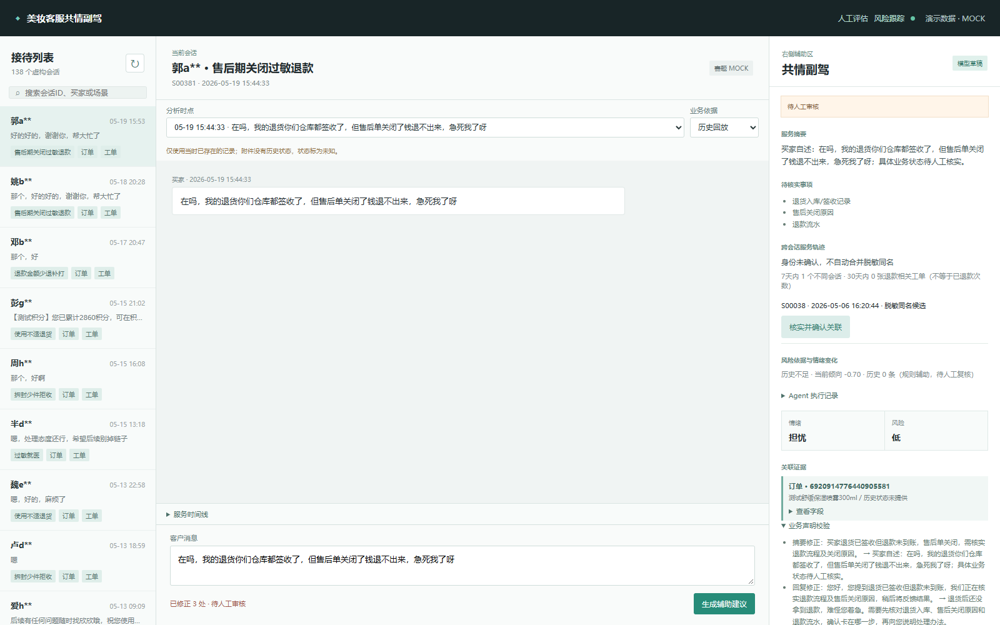

实际运行验收
| 检查 | 结果 | 范围 |
|---|
| 软件回归 | 228项通过 | 程序行为，不是模型准确率 |
| 交互链路 | 通过 | 生成、审核、任务认领及状态跟踪 |
| 页面 | 桌面 / 手机 | 无脚本错误、无横向溢出 |
| 录制路线彩排 | 2个场景 | 退货退款受阻 / 举报风险；实际视频待录制 |
当前补丁：12条同案例复测
| 当前规则检出问题的案例数 | 10月9日V7 | 10月10日reviewed-4 |
|---|
| 声明问题 | 0 / 12 | 0 / 12 |
| 服务行为问题 | 2 / 12 | 0 / 12 |
| 模型不可用降级 | 0 / 12 | 0 / 12 |
两组保存输出均用当前规则复查；补了批次和损坏原因检查。当前12例保留10条21处调整。规则无检出仍需人工语义审核，不作为独立准确率。
| 本机顺序运行 / 12条合计 | 10月9日V7 | 10月10日reviewed-4 |
|---|
| 总Token | 7682 | 7684，增加0.03% |
| 系统中位耗时 | 2.55秒 | 2.69秒 |
| 样本最大耗时 | 2.72秒 | 2.97秒 |
当前补丁改善回复检查与缓存一致性，未测得新的成本下降或提速；以下两组为10月9日的优化测量。
10月9日：12条系统请求
| 12条合计 / 本机顺序运行 | V6基线 | V7测量版 |
|---|
| 输入Token | 6913 | 6149，减少11.05% |
| 总Token | 8980 | 7682，减少14.45% |
| 系统中位耗时 | 3.21秒 | 2.55秒 |
| 样本最大耗时 | 3.58秒 | 2.72秒 |
包含1条明确发货证据的零Token路径，限无风险、无历史争议的单订单查询。全组降幅包含这一路由的贡献，耗时是系统耗时。
10月9日：11个共同模型案例
| 各22次模型生成 | V6协议 | V7协议 |
|---|
| 有效结构 / 请求数 | 22 / 22 | 22 / 22 |
| 总Token | 16368 | 15364，减少6.13% |
| 模型中位耗时 | 3.030秒 | 2.436秒，减少19.60% |
| 本组P95 | 3.375秒 | 2.622秒，减少22.32% |
同机、同模型、先后顺序交替；规则路径不混入。固定请求小样本，不是生产并发SLA，不报告真实用户总体或人工提效。
识别检查与原人工标注回归
| 32条分开记录的验证表达 | 改前 | 改后 |
|---|
| 意图 | 21 / 32 | 26 / 32 |
| 基本情绪 | 26 / 32 | 32 / 32 |
| 场景情绪 | 25 / 32 | 31 / 32 |
32条表达的预期由工程定义。原30条人工标注事后回归：意图20→21/30，Macro-F1约0.5548→0.4629；混合情绪5→10/30、风险29/30。高风险正例缺失，情绪标签口径仍需统一。
已验证的客服副驾画面

界面截图来自隔离数据库软件验收，不是线上客户服务或人工实验成绩。
证据文件
评估与历史结果 · 技术方案 · 已知边界
以上表格是原本地输入的历史测量。上传副本已清理昵称和无关字段，未重测这些模型指标；聚合摘要保存在evaluation/reference/local_measurement_summary.json，原私有数据库和完整模型日志未公开。
初赛仍需PPT成品与实际视频，决赛另有现场Demo及源码/指南ZIP。本页不是比赛提交回执。